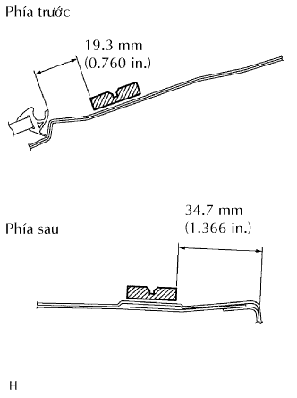
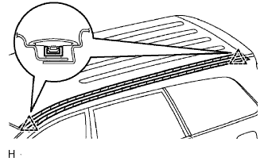

NẸP TRANG TRÍ DỌC TRẦN XE BÊN TRÁI > LẮP |
| Hạng mục | Điều kiện tiêu chuẩn |
| Thân xe | 40 đến 60°C (104 đến 140°F) |
| Kẹp | 20 đến 30°C (68 đến 86°F) |
| 1. THÁO KẸP CỦA NẸP TRANG TRÍ DỌC TRẦN XE |
Bóc băng dính hai mặt vẫn còn lại trên các bề mặt của nẹp và thân xe, sau đó lau sạch bề mặt đó bằng xăng trắng.
Dùng đèn sấy, sấy mặt lắp kẹp trên thân xe và phần lắp của các kẹp.
|  |
Lắp các kẹp mới vào các vị trí như trong hình vẽ. Hãy lắp ép kẹp bằng tay.
| 2. LẮP NẸP TRANG TRÍ DỌC TRẦN XE BÊN TRÁI |
|  |
Hãy dán băng dính bảo vệ quanh các mép của nẹp.
Điều chỉnh vị trí của nẹp sao cho các đầu phía trước và phía sau gắn vào 2 kẹp của xe và lắp nẹp.
Bóc băng dính bảo vệ.